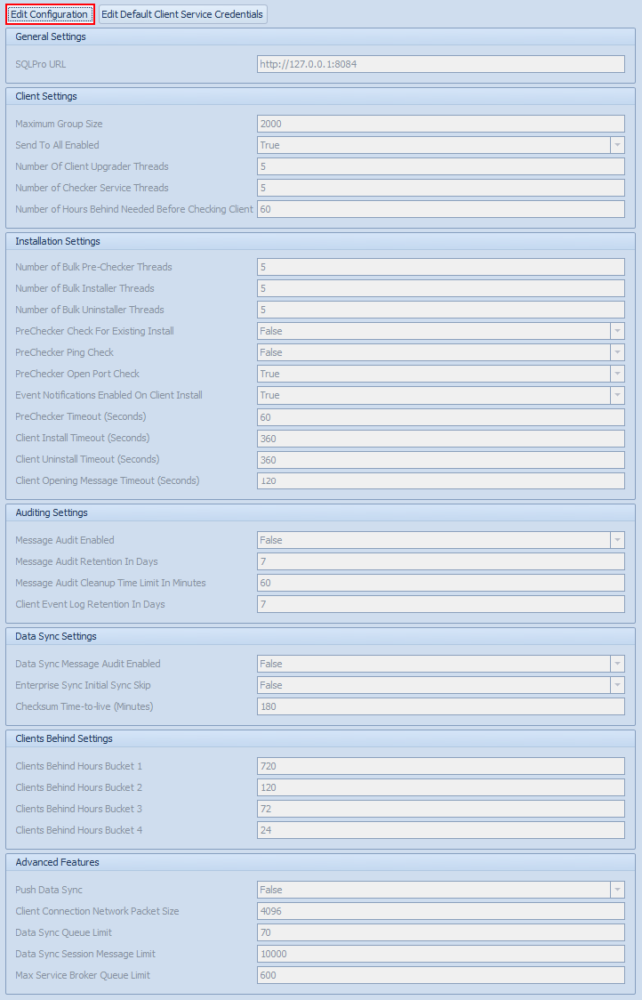

Configuration Administration Overview
The C4SQL Configuration Administration screen is used to tweak various Conductor4SQL Settings
To adjust Conductor4SQL settings select the C4SQL Configuration tab from the Central Administration screen.
Click on the Edit Configuration button to adjust any settings you wish to edit

- Reporting Services Url - the url where the Conductor4SQL Reporting services reports are deployed
- Maximum Group Size - the maximum number of clients allowed in a single client group (default 2000).
- Send To All Enabled - Enable or disable the All option in central client control (default true).
- Event Notification Enabled On Client Install - Enable event auditing when client is installed (default true).
- Number of Bulk Pre-Checker Threads - The number of clients to test at once when running the Bulk Client Pre-Checker (default 5).
- Number of Bulk Installer Threads - The number of clients to install at once when running the Bulk Client Installer (default 5).
- Number of Bulk Uninstaller Threads - The number of clients to uninstall at once when running the Bulk Client Uninstaller (default 5).
- Number of Hours Behind Needed Before Checking Client - The amount of hours that the client hasn't communicated for before the Client behind diagnostic tool will run (default 60).
- Number of Checker Service Threads - The number of clients that are behind to run the Client behind diagnostic tool (default 5).
- Number of Client Upgrade Threads - The number of clients to upgrade at once when upgrading clients to a newer version of Conductor4SQL (default 5).
- Message Audit Retention In Days - Every message that Conductor4SQL central receives is stored for the number of days defined before they are archived. This data is kept for debugging purposes (default 7)
- Message Audit Archive Retention In Days - Every message that Conductor4SQL archives is further stored for the defined number of days before they are deleted. This data is also kept for debugging purposes (default 60)
- Client Event Log Retention In Days - The number of days that the Client Event Audit data is kept for (default 7)
- Message Audit Archive Retention In Days - Every message that Conductor4SQL archives is further stored for the defined number of days before they are deleted. This data is also kept for debugging purposes (default 7)
- Message Audit Cleanup Time Limit In Minutes - Set the length of time (in minutes) that the daily job clears old message audit and data sync audit messages (default 60)
- Enterprise Sync Initial Sync Skip - Used for when you are using Enterprise Sync and restoring database backups at central rather than performing initial sync (default false)
Click on the Save Configuration button when you have completed tweaking the Conductor4SQL settings.